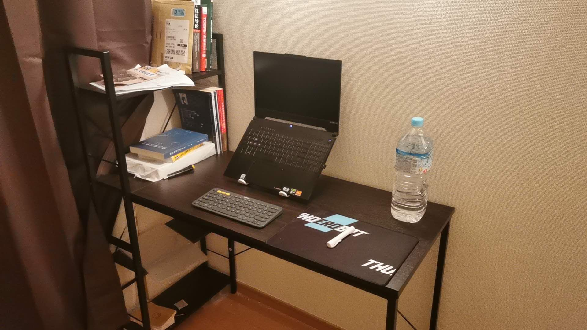
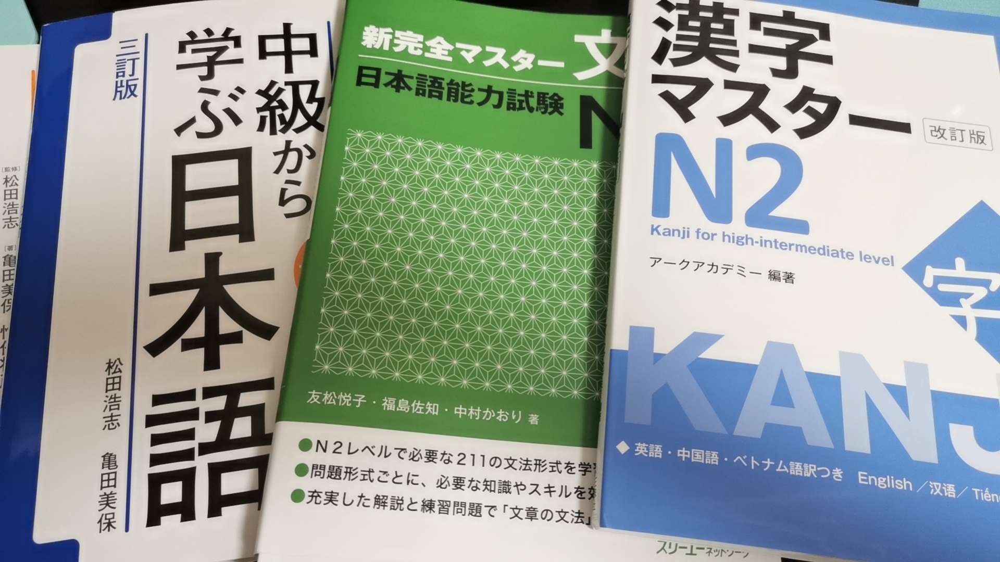
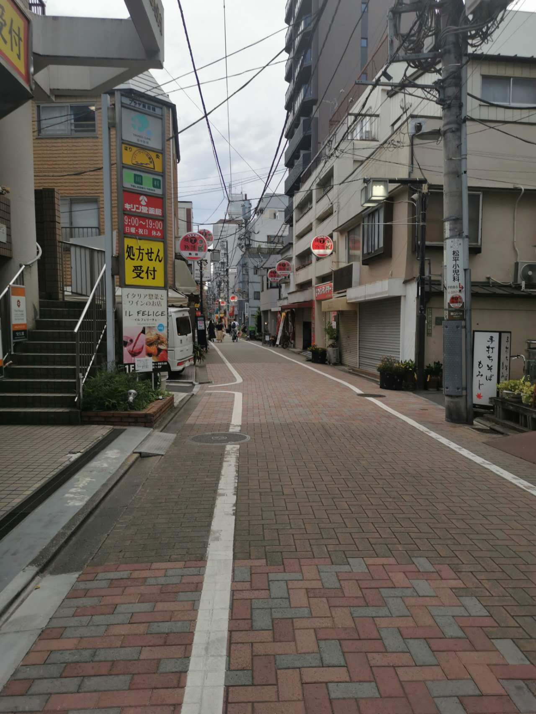
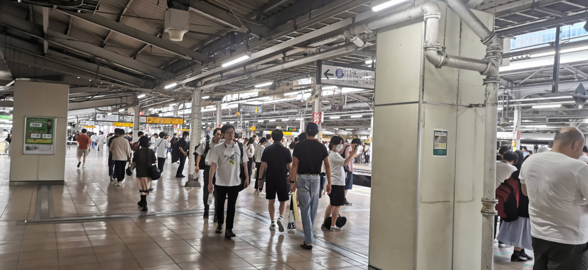

留学日记-2
来这边一周多了，再来记录一下自己的生活。
日本真的生活起来很舒服吗？
我的小家
现在租的这个小房子总算有了点人类居住所的感觉了。
添置了桌椅、冰箱、洗衣机、热水壶和电饭煲。但是我的厨具还没有到，锅碗瓢盆一个没有。
上次去百元店本来想买个刀和菜板的……才反应过来刀需要刀架，菜板得有地方放。我那个狭小的地方，哪里来的空间放这些东西，总不能放在头顶的厨柜里面吧。
做饭啥的还不急，慢慢来吧。
家里的垃圾还是堆在那里，这边的垃圾分类，要说多复杂，到好像也没有，但是有这么个流程，总归是麻烦的。
因为要处理垃圾，我买东西欲望都降低了，全是生存的欲望导致我购买食物和水。
别的则是能不买，就不买了。

在语校
这周的课程依旧不是很难，虽然每次都会涉及到完全陌生的知识点，全程日本老师纯日语上课，用他们的理解为我们讲解哪些词语和文法。
今天做了个小考试，在手机上使用谷歌classroom软件完成。
手机做卷子嘛，都懂的。
不得不说，这种成绩高低无所谓，重要的是自己学会了这个知识点没，无关利益的感觉真好。
虽然，确实这样会导致我的学习非常的敷衍。

我的社交
出了最开始在班上找到的和我住很近的女生，以及某次排队认识的两个别的班的女生，我又认识了几位朋友。
当然都是女生。
在班上又认识了一位本科学习油画的朋友，现在准备攻读这边的插画专业。
然后通过别的班的那两位同学，又认识了她们宿舍的同学。
大家都是来这边考大学院的，文科或艺术专业。（目前遇到的艺术最多，其次社科，最后是理工科。数据仅参考我的身边。）
理工科我现在只知道我们班上有一个学机器人的，和一个学电气的。
我现在经常和那群宿舍的同学们一起出去吃饭，我们都冲着好吃且便宜的餐馆去。虽然这几次我们去的餐厅都不便宜。
这边我知道的最便宜的是松屋，最便宜的套餐，肥牛盖饭+生菜沙拉和一碗味增汤是420日元左右（21RMB），贵的当然也有八九百日元的套餐。还有个SAIZERIYA，西式的餐厅，最便宜的焗饭320日元。
这几天，跟着这几位同学去了书店，去了文具店。唯有书店的漫画书的价格还较为亲民，我看到《暗杀教室》的漫画单行本110日元（5RMB），有的是220日元。但是文具店也是一支笔好几十。
不得不说，从国内带文具是多么的明智，自动铅笔成了我不得不用的选择。因为笔芯便宜，还可以修改。
同样的斑马、百乐，甚至是我喜欢的白金钢笔，都比国内的价格高上一些，谢谢国内的商家没有涨价，谢谢晨光得力的一路护航，不然这书我是真的读不起。
现在认识了这么些朋友，虽然我们每天只有短暂的交流时间，但是让我孤独的学校生活好上了不少，非常感谢。
我的生活
现在基本上开始了两点一线的生活。
早上八点过一点出发去车站，到学校上课，上了课后和同学吃个饭，再去采买一些东西，回家。晚上大部分是靠着便利店的食物过活。
下午这两天主要是收拾东西，学习什么的，甚是惭愧，还没有起步。
就是这样简单的生活，或许也有最近几日的高温天气影响，回到家后就已经筋疲力尽。
不过现在要开始了，一边收拾屋子，一边看论文，一边复习我的课程。
好像我的生活很无聊，没有那些留学生的精彩灿烂。
说实话，这边物价这么贵，大学院也还没有考上，生活还是一团乱麻。
我第一次自己一个人handle所有的一切，在照顾自己好好生活上好像也没有什么经验和才能，唯一能松一口气的也就是经济还是靠着家里的支持（感谢我的爸爸妈妈）。
很多时候我回到家，打开门看到乱糟糟空荡荡的房间，心里面都沉沉的，我好像很难过，但是又没有难过到想哭，放下书包打开空调，也就这样了。
我好像有什么事情想说给什么人听，但是又好像没什么说的必要，也不知道该说给谁。
我也想出去走走，但是家里还那么乱，书还没有打开，出去妈的坐一趟地铁起步价9RMB，太阳仿佛要把人晒穿，算了算了。
打车？记得昨天准备去一个比较远的地方看看台灯（结果并没有买到，还走了一个多小时的路），做地铁就190左右的日元，如果打车大概是10倍的价格（数据来自谷歌打车价格计算）
虽然家里吹空调也贵。
这边，感觉做啥都束手束脚。
走路必须要随大流靠左，路太窄了稍微走随意一点就可能撞到人。
吃个饭都安安静静（大部分的店），然后店里面也窄得很。
吃饭贵，买东西贵，东西还买不到。
我不熟悉这边该去那里买需要的东西，只知道自己认识的那几个小店。大点的店，东西就不是一两倍的贵了。
网购，东西少，还贵，还撇。国内更好的配置，更低的价钱，这边的电商……好吧，有总比没有好，不然现在我还在奔波于买生活用品。
我点名表扬：淘宝、京东、拼多多。亚马逊你是什么品种的垃圾。（可能有些粗暴了，但是是真情实感）
我知道这有点那种，端起碗吃饭放下碗骂娘。
来说说使用体验吧：
首先是东西的丰富度：亚马逊完败。然后是页面的展示，网页版：亚马逊很简陋且，产品信息混乱，每次看一个新的东西，详细信息要用放大镜看才看得清，手机版：有一种怼在我脸上的美。功能上：送货要想免费就用时间换，无法跟踪详细物流信息，只能知道非常粗糙的信息。
要说好处，听说亚马逊买东西，评分的信任度很高，不用担心刷分，还有就是下单的时候说几号到就真的是几号到，京东或许可以达到这个效果，但是淘宝和拼多多，菜鸟驿站的时间不一定可以如此准时。
还有什么可以聊聊呢……
说一些网上流传的对日本的印象，以及我经历的亲身体验吧。
- 首先是日本街道、河道真的那么干净么？路上看不到垃圾桶？
说不上一尘不染，但是真的干净。走在路上给人一种干净整洁的感觉。之前去秋叶原路上路过了一条河，确实是没有垃圾漂浮。
也确实，很难找到垃圾桶。但是通常可以在贩卖机、便利店、超市和餐馆的背后找到垃圾桶，请注意也是需要分类的。别丢错了。

- 日本人讲规矩，什么红绿灯没人都是按规矩走。
不守规矩的人哪里都有。守规矩的肯定是大多数。
- 办事效率低
真。刚来日本需要办理在留卡的居住证明，由于这个月前来居住的外国人过多所以不少地方窗口都限时了，只能上午办理（我不理解）。我好不容易找到一个能办理这个手续的分局一样的地方。那个人叫我填了一张纸，也就是一些简单的个人信息。顺便办了普通的国民健康保险。从到我，等了半个多小时，到办完，花了一个半小时……俺也不明白就几行字，他在那个玻璃墙后面到底在干嘛搞了那么久。
- 地铁安静
真。我都不敢打电话，和朋友说话都是把声音压倒极低。
这里的地铁没有安检，前几天和大学同学聊到这个问题。这确实提高了通勤效率，但是也确实导致了几次大型恶性事件犯人行凶时的一路畅通。

- 服务好
我不知道日本人心里在想什么，但是作为客人，我很的感受到了他们的贴心和温柔，这就足够了。
目前差不多是这些。
接下来就不是我亲自经历的事情了，说一下我的朋友们分享在朋友圈的或是讲给我听的他们的故事吧。
我在手机店认识的那个很漂亮的女生，遇到了搭讪的大爷，邀请她去喝茶；遇到了一些大叔上下盯着她打量，说她可爱。走过了一条全是牛郎的街道。
我一个朋友，去了一家中餐厅，那里的老板对日本人点头哈腰，对中国人爱答不理，甚至优先给日本人上菜。
这个朋友的老师，买东西的时候，租房的时候，办手机卡的时候，被中国人坑，导致银行卡信用卡无法正常使用，签证可能都会受到影响。
希望大家都能远离这些不愉快。还有就是中国人别骗中国人。
嗯，虽然还有很多麻烦的事情没有处理好、等着做，但是好歹是一步步开始走上正轨（也真的花了很多的钱）。算不上高效，也有很多时候在摆烂，在emo，在睡觉，往前总是好的。
现在开始看书了，又会遇到很多的困难吧，害，除了努力好像也做不了别的什么，加油咯。
放几个图吧，导都导进来了：
- 拉面哦，720日元
- 一条街